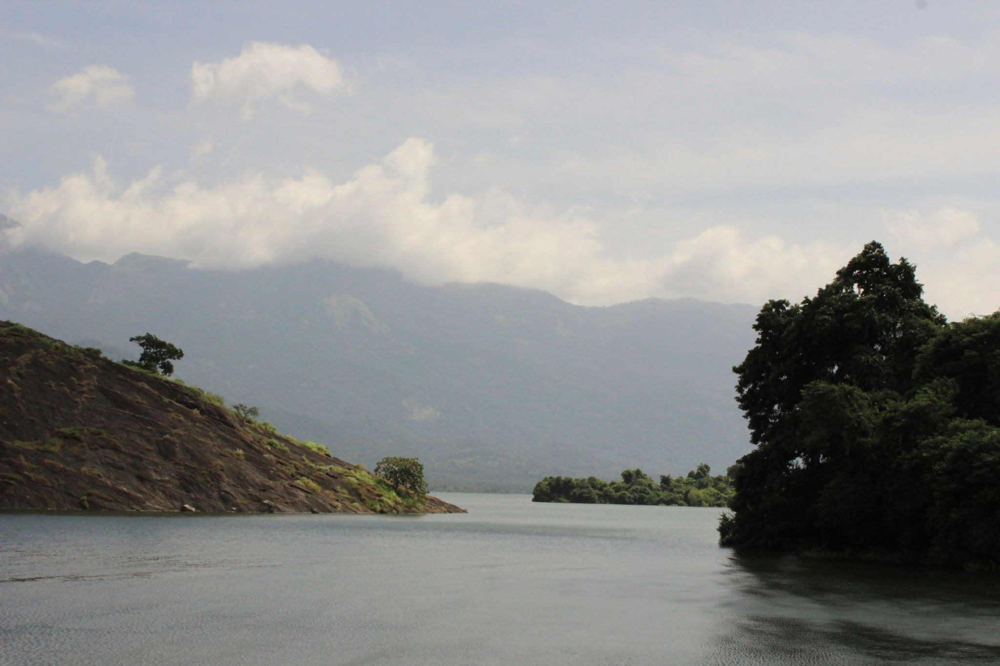

Palakkad
Palakkad, also known as Palghat, is a city and municipality in the state of Kerala in India, spread over an area of 26.60 km2; it is the administrative headquarters of the Palakkad District. The city is situated about 350 kilometres (217 mi) north of state capital Thiruvananthapuram and 50 kilometers south west of Coimbatore in Tamil Nadu, and 66 km north east of Thrissur on the Salem-Kanyakumari National Highway NH 544
Places to visit
1.Malampuzha Dam

Malampuzha Dam is the largest reservoir in Kerala, located near Palakkad, in the state of Kerala in South India, built post independence by the then Madras state. Situated in the scenic hills of the Western Ghats in the background it is a combination of a masonry dam with a length of 1,849 metres and an earthen dam with a length of 220 metres. The dam is 355 feet high and crosses the Malampuzha River, a tributary of Bharathappuzha, Kerala's second longest river. There is a network of two canal systems that serve the dam's reservoir of 42,090 hectares.
2.Palakkad Fort

Palakkad Fort is an old fort situated in the heart of Palakkad town of Kerala state, southern India. It was recaptured and rebuilt grandly by Sultan Hyder Ali in 1766 ACE and remains one of the best preserved forts in Kerala.